1,069쪽 책을 로컬 AI에 읽혀 Claude 토큰 아끼기¶
1,000쪽이 넘는 PDF 사용자 매뉴얼이 앞에 놓이면 감이 와요. 아, 오늘 토큰 활활 타겠구나.
이럴 때 방법은 두 가지예요. 첫 번째는 새로 들어온 신입을 살살 꼬셔서 토큰을 얻어 쓰는 거예요. 신입은 아직 이번 주 한도를 거의 안 썼을지도 모르거든요. 두 번째 방법은 이 글에서 공개해요. 양심에는 이쪽이 덜 찔려요.
Claude로 일하다 보면 대답 몇 줄을 얻으려고 수십만 자를 먼저 읽혀야 할 때가 있어요. 그래서 원문을 읽는 일은 제 RTX 3090에 띄운 Qwen3.8 27B에 맡기고, Claude에는 요약과 확인할 대목만 건네요.
30초 요약¶
- 책 1,069쪽, 42개 장을 약 33분에 요약했어요. 완성된 장별 요약을 전부 읽어도 Claude의 예상 읽기 토큰은 원문보다 90% 넘게 줄어요.
- 투자 글 131편은 11분 10초 걸렸어요. Claude에 전체 개요만 건네면 예상 읽기 토큰을 99% 넘게 아껴요.
- 스크린샷 6장은 약 20%, NASA 영상은 80% 넘게 아끼는 것으로 나왔어요. 같은 모델이라도 돌려주는 답이 길면 차이가 작아요.
- 원문을 직접 읽을 때와 로컬 결과를 읽을 때의 토큰 수를 비교했어요. 도구를 만들거나 원문을 다시 확인하는 데 드는 사용량은 별도예요.
- 숫자와 화면 글자는 대체로 정확했지만, 책 요약과 지표 글에서 뽑은 규칙에는 뜻이나 숫자가 달라진 곳이 몇 군데 있었어요. 그래서 로컬 AI의 요약은 Claude가 원문과 한 번 더 확인해요.
- 같은 Claude Code 화면을 그대로 쓰면서 두뇌만 로컬 모델로 바꿀 수 있어요.
claude-local한 줄이면 파일 수정, 터미널 실행, 웹 검색까지 Claude 사용량 없이 돼요. - 코드 수정과 판단이 필요한 일은 그대로 Claude가 해요.
무엇을 설치했나¶
| 항목 | 내용 |
|---|---|
| 그래픽카드 | RTX 3090 (메모리 24 GB) |
| 운영체제 | Ubuntu 24.04 (이 글의 측정과 도구는 모두 Ubuntu에서 돌렸고, Windows에서는 시험하지 않았다) |
| 실행 프로그램 | Ollama (모델을 내려받고 실행해 주는 무료 프로그램) |
| 모델 | qwen3.8:27b (밀집형, 273억 매개변수, 이미지 입력 지원) |
| 모델 파일 | Q4_K_M(4비트) 가중치 16.81 GB와 이미지 입력용 파일 0.93 GB |
| GPU 메모리 | 모델 할당량 17.84 GB, 전부 GPU에 적재. 보드 전체 사용량 20,904 MiB |
| 한 번에 읽는 양 | 65,536토큰으로 설정 |
| 답을 쓰는 속도 | 소수 판별 함수 작성 시 초당 83.5토큰 |
긴 장을 읽을 공간을 확보하려고 앞에서 읽은 내용을 담는 메모리(KV 캐시)에 8비트 설정을 썼어요. 속도와 메모리는 이 설정으로 제 PC에서 한 번 잰 값이에요.
같은 화면, 다른 두뇌: Claude Code를 로컬 모델로¶
가장 쓸모 있었던 건 이거예요. 평소 쓰던 Claude Code 화면을 그대로 두고, 답하는 두뇌만 로컬 PC에 띄운 AI 모델로 바꿀 수 있어요.
- 명령
claude로 열면 평소처럼 Anthropic 서버의 Claude가 답해요. - 명령
claude-local로 열면 같은 도구를 쓰면서 제 PC의 Qwen3.8 27B가 답해요. - 파일 고치기, 터미널 명령 실행, 웹 페이지 읽기가 그대로 돼요. 웹 검색은 로컬 PC에 띄운 검색 프로그램으로 연결했어요(아래 「검색은 따로 붙였다」).
그래서 Claude 사용량이 바닥나도 일이 멈추지 않아요. 한도가 오기 전에 Claude에게 진행 상황을 몇 줄로 정리하게 하고, claude-local로 다시 열어 그 메모를 건네면 같은 화면에서 이어서 일할 수 있어요.
재 본 숫자예요.
- 소수 판별 파일을 만들고 실행해서 20 미만의 소수 8개를 정확히 보고하기까지 115초가 걸렸어요.
- 별도 검색 시험에서 어려운 질문 4개의 사실 13개를 모두 맞혔어요. 질문당 평균 190초였어요. 쉬운 질문까지 합치면 20개 중 19개예요.
역할 나누기: 찾기는 Claude, 읽기는 로컬¶
평소에는 이렇게 써요. Claude로 일하다가 읽을 게 많은 일만 로컬에 넘겨요.
- Claude가 무엇을 읽을지 정해요. 파일 경로나 웹 주소만 고르고, 내용은 읽지 않아요.
- 로컬 AI가 파일과 페이지를 직접 열어서 읽어요.
- 로컬 AI는 몇 줄짜리 요약만 돌려줘요.
- Claude는 그 몇 줄을 보고 판단하고, 중요한 대목은 원문과 한 번 더 맞춰 봐요.
비싼 건 원문이에요. 원문이 Claude를 거치지 않으니 그만큼 사용량이 줄어요.
이 연결은 MCP로 만들었어요. MCP는 Claude에 도구를 꽂는 표준 플러그예요. 작은 프로그램을 하나 등록하면, Claude는 그것을 "파일 고치기", "명령 실행" 같은 도구 중 하나로 봐요. 저는 "로컬 AI에게 읽히기" 도구를 만들어 꽂았어요. 이 도구가 집 컴퓨터에서 파일을 직접 열기 때문에 원문이 Claude를 거치지 않아요. 도구 설명에 "읽을 게 많으면 이 도구를 써라"라고 적어 두니, 제가 말하지 않아도 Claude가 알아서 넘겨요.
| 방식 | 누가 답하나 | 언제 쓰나 |
|---|---|---|
claude-local |
세션 전체를 로컬 모델이 | Claude 사용량이 바닥났을 때 |
| MCP 도구 | Claude가 일하고, 읽기만 로컬 모델이 | 평소에 |
실측: 글 131편, 책 1,069쪽, 그림, 영상¶
블로그 글 131편¶
투자 글 131편(약 65만 자)을 한 편씩 읽고 전체 개요를 쓰기까지 11분 10초 걸렸어요. Claude가 원문을 다 읽으면 약 35만~42만 토큰, 3,902자짜리 개요만 읽으면 약 2,300토큰으로 추정해요. 읽기에 드는 양을 99% 넘게 아끼는 셈이에요.
시리즈 글 7편(약 5만 2천 자)은 93초 걸렸어요. 개요는 약 870토큰이에요. 글이 서너 편뿐이고 어차피 원문을 다시 열어 볼 거라면 저는 그냥 Claude에게 읽혀요.
편별 요약은 소리 분류 정확도 95%, 처음 보는 사람의 동작 분류에서 원신호 94%와 진동 그림 97%를 제대로 옮겼어요. 다만 사람을 섞었을 때의 98%는 원신호 94%와 비교해야 하는데 97%와 연결했어요. 최종 개요에서는 이 숫자가 빠졌어요. 131편 쪽에서는 편별 요약 한 곳과 전체 개요 한 곳에 외국어 표현이 섞였어요.
지표 글 12편에서는 읽는 규칙 166개를 뽑았어요. 적어도 세 개는 인용문을 옆에 붙이고도 뜻을 바꿨어요. 예를 들어 원문에서 부도 시 손실률은 ‘1에서 회수율을 뺀 값’인데, 요약은 ‘회수율의 역수’라고 했어요. 이런 규칙은 그대로 계산에 넣기 전에 식부터 확인해요.
책 1,069쪽¶
이 교과서는 스캔한 종이에 글자층을 입힌 PDF예요. 목차를 읽히니 36초 만에 실제 장의 시작 쪽 42개를 모두 찾고도 다섯 항목을 장으로 더 셌어요. 그래서 확인해 둔 42개 시작점을 넣었어요. 장별 요약과 전체 개요까지 32분 49초, 로컬 입력은 약 62만 6천 토큰이었어요.
Claude가 원문을 읽으면 63만 토큰 이상, 목차와 장별 요약을 담은 결과 파일을 통째로 읽으면 약 4만 6천 토큰으로 추정해요. 90% 넘게 아껴도 확인할 곳은 남아요. 두 장에서 확인한 사실 아홉 가지 중 여덟 가지가 맞았어요. 8장은 매수·매도 방향과 예제 손익이 원문과 맞았어요. 반면 1장은 증권사가 고객을 고르는 절차를 생략하고 청산기관이 매도자를 직접 무작위로 고른다고 썼어요.
그림: 스크린샷, 사진 검사, 사진 정리¶
그림 작업도 같은 모델로 시험했어요. 여기서 잰 시간은 모두 Qwen3.8 27B 기준이에요.
휴대폰 스크린샷. 기사 사진을 동기화 폴더에 넣고 “인박스 읽어줘”라고 하면 Claude는 로컬 모델이 옮긴 글만 받아요. 여섯 장을 읽는 데 171초 걸렸어요. 기사에 나온 세 모델은 구분했지만 순서를 고민하는 말까지 답에 길게 남겼어요. 사진을 직접 볼 때 약 1만 2천 토큰, 답을 읽을 때 약 9,600토큰이라 절감률은 약 20%였어요.
AI로 만든 사진 검사. 제가 AI로 만든 사진들로 불량 찾기를 시험했어요.

사진 7장을 검사하는 데 36초 걸렸어요. 예전 35B가 국기와 자동차, 부두 기둥 문제를 짚은 사진에 3.8은 만점을 줬어요. 불량 후보를 좁히는 데 쓰더라도 마지막에는 사진을 직접 봐요.
사진 정리. 사진 61장에 태그를 다는 데 184초, 장당 약 3초 걸렸어요. 미리 정한 다섯 장 모두 숲과 강, 돔 지붕 같은 큰 장면은 맞았어요. 다만 건물 앞에 없는 조각상을 덧붙였고, 다섯 장 모두 AI로 만든 사진이라는 점은 놓쳤어요.
NASA 3분 영상¶
NASA의 3분 영상은 우주에서 폐광 오염을 찾는 이야기예요. Whisper로 음성을 받아쓰고 Qwen3.8 27B가 장면 24장을 읽어 시간대별로 정리했어요. 받아쓰기까지 약 74초 걸렸어요.
화면에 뜬 광산 약 5만 곳이라는 숫자와 흰 전환 화면을 제대로 읽었어요. Claude가 화면과 자막을 직접 보면 약 1만~3만 토큰, 자막을 빼고 요약과 장면 메모만 읽으면 약 1,800토큰이라 80% 넘게 줄어요.
PDF, 한글 파일, 웹 페이지도¶
로컬 AI가 읽을 수 있게 파일을 글자로 바꿔 주는 단계를 붙였어요.
| 형식 | 바꾸는 방법 |
|---|---|
| 쪽마다 글자를 뽑아요. 글자가 없는 쪽(스캔본)은 모델이 그림으로 보고 읽어요 | |
| Word, Excel, PowerPoint | 문단, 표, 시트를 글자로 뽑아요. 옛 형식(.doc, .xls, .ppt)도 돼요 |
| 한글(.hwp, .hwpx) | 공개 도구로 글자를 뽑아요 |
| 웹 페이지 | 주소를 주면 본문만 받아 와요 |
36쪽짜리 FANUC 기술 매뉴얼은 약 21초 걸렸어요. 글자층이 없는 여섯 쪽은 그림으로 읽었어요. EtherCAT 설정과 배선, 진단 항목은 잘 찾았지만 제어기 이름 R-30iB를 R-30+B로 옮겼어요. 부품을 고를 때는 한 글자도 중요해요.
Excel처럼 숫자가 많은 파일은 맡기지 않아요. 이 모델은 합계나 추세를 틀리기 쉬워요. 숫자는 Claude가 코드로 계산하는 쪽이 정확하고, 원래도 사용량이 적게 들어요.
옛 Word·PowerPoint 형식은 관리가 끊긴 변환 도구를 써야 해요. 오래된 프로그램은 보안 구멍이 생겨도 고쳐지지 않아요. 출처를 모르는 파일을 다루는 일이라, 인터넷과 쓰기 권한을 막은 격리 컨테이너(Docker) 안에서만 실행해요.
검색도 로컬에서¶
웹 페이지를 읽는 건 처음부터 로컬에서도 됐어요. 그런데 검색은 안 됐어요.
Claude Code의 검색은 내 컴퓨터가 아니라 Anthropic 서버에서 실행돼요. 로컬 모델로 바꾸면 요청이 그 서버로 가지 않으니 검색도 함께 사라져요. 그래서 검색 엔진 여러 곳을 대신 조회해 주는 공개 프로그램(SearXNG)을 로컬 PC에 띄우고, 위와 같은 MCP 도구로 꽂았어요. 메모리는 약 125 MB만 써요.
평소 Claude로 일할 때도 웹 조사는 로컬에 맡겨요. 이때는 Claude가 주소를 고르지 않고 질문만 넘겨요.
- 로컬 PC가 SearXNG로 검색해요.
- 위쪽에 나온 페이지 대여섯 장을 로컬 PC가 직접 열어요.
- 로컬 AI가 그 페이지만 보고 답을 써요. 문장마다 출처 번호와 원문 인용을 달고, 출처끼리 말이 다르면 그것도 적어요.
- Claude는 출처 목록을 포함한 짧은 답만 읽어요.
Claude가 직접 찾았다면 검색 결과와 페이지 서너 장을 읽느라 1만 토큰 넘게 썼을 거예요(추정치).
원문으로 맞는지 확인할 수 있는 질문 세 개를 넣어 봤어요.
| 질문 | 로컬 AI의 답 | 원문과 비교 |
|---|---|---|
| Ollama의 당시 안정판은? | 0.40.16 | 릴리스 기록과 맞았지만 답에는 2차 출처만 있었어요. |
| Ubuntu 26.04의 기본 Python은? | 3.14 | 버전은 맞았지만 공식 표에서 인용한 줄은 25.10이었어요. |
| FLUX.2 klein의 라이선스는? | 9B는 비상업용, 4B는 Apache 2.0 | 두 공식 모델 카드와 맞았어요. 답에 카드 링크는 없었어요. |
세 질문 모두 여섯 페이지씩 읽고 핵심 결론을 맞혔어요. 그래도 출처 번호만으로는 부족해요. 버전이나 호환성이 중요하면 공식 페이지를 열어 인용한 줄이 내가 쓰는 판에 해당하는지 확인해요.
무엇을 맡기고, 무엇은 안 맡기나¶
기준은 단순해요. 읽을 건 많은데 결과는 짧은 일이면 로컬에 맡겨요.
- 맡겨요: 문서 여러 편 요약, 긴 로그 정리, 웹 조사(검색과 페이지 읽기), 긴 PDF나 책에서 필요한 내용 찾기, 영상 정리, 사진 1차 거르기
- 맡긴 뒤에는: 결과를 그대로 쓰지 않고, 숫자·이름·핵심 설명을 Claude가 원문과 한 번 더 맞춰 봐요
- 안 맡겨요: 코드 수정과 디버깅(어차피 Claude가 코드를 읽어야 해요), 사실 확인, 글 리뷰, 최종 편집, 숫자 계산, 작은 일
빠르게 훑을 때는 왜 35B를 쓰나¶
제 PC에는 qwen3.8:27b와 qwen3.6:35b 두 모델만 남겼어요. 35B는 토큰마다 일부 매개변수만 쓰는 모델이라 빠른 작업에서는 훨씬 빨라요. 별도 생성 속도 시험에서는 초당 218토큰 대 57토큰이었고, 책 한 권은 약 15분 대 33분이었어요. 위 설치 표의 83.5는 소수 판별 함수를 쓸 때의 속도예요.
| 원문에 충실해야 할 때 · 3.8 27B | 속도가 중요할 때 · 3.6 35B |
|---|---|
책·문서 요약, 도면 판독, 웹 조사, 기본 claude-local 세션 |
인박스·OCR, 사진 검사·태그, 영상, 빠른 훑어보기 |
책의 세 장을 두 번씩 읽힌 별도 비교에서 여섯 요약의 틀린 주장은 3.8이 0개, 3.6이 3개였어요. 도면은 35B에도 한 번 읽혀 답이 갈리는 치수를 확인해요. 그래서 도면 대조용으로 두었던 qwen3-vl은 지웠어요. 코드 수정은 Claude가 하고, 로컬에 맡길 코드 일은 기본 claude-local(3.8)로 충분해서 qwen3-coder도 지웠어요.
함정: 그래픽카드는 하나¶
같은 그래픽카드로 이미지와 영상도 만들고(ComfyUI), 로봇 시뮬레이터(Isaac Sim)도 돌려요. 예전에 Qwen3.6 27B를 쓸 때 ComfyUI가 15.8 GB를 잡고 있어 속도가 초당 63토큰에서 7토큰으로 떨어졌어요. 이번 3.8 측정에서는 다른 GPU 작업을 먼저 끝내고 모델 전체가 그래픽카드에 올라갔는지 확인했어요.
그래서 규칙을 정했어요.
- 이미지 작업이 끝나면 이미지 프로그램을 꼭 꺼요.
- 로컬 AI를 쓰기 전에 모델이 그래픽카드에 100% 올라갔는지 확인해요(
ollama ps). - 이미지를 다시 만들기 전에는 로컬 모델을 내려요(
ollama stop).
사람이 매번 기억하기는 어려워서, 확인을 프로그램에 넣었어요. claude-local과 요약 도구는 시작하기 전에 그래픽카드를 누가 쓰는지 봐요. ComfyUI나 Isaac Sim 같은 다른 작업이 메모리를 잡고 있으면 모델을 띄우지 않고 "누가 몇 GB를 쓰고 있다"고 알려 준 뒤 멈춰요. 그 작업을 대신 끄지도 않아요. 그때는 그냥 Claude로 하거나, 그 작업이 끝난 뒤에 다시 해요.
직접 해 볼 분을 위해, 기술적인 함정 두 가지도 적어 둘게요.
- Claude Code를 로컬 모델로 실행하면 세션 중간에 "모델을 찾을 수 없음" 오류가 날 수 있어요. 배경 작업에 쓰는 작은 모델 이름(haiku)까지 로컬 모델로 연결해 줘야 해요.
- Claude Code에도 Ollama에서 설정한 65,536토큰 한도를 알려 줘요. 그래야 대화가 길어졌을 때 모델이 받을 수 있는 크기로 요청을 보내요.
정리¶
- 로컬 AI가 Claude를 대신하지는 못해도, 읽는 일꾼으로는 충분해요.
- 책이나 글을 많이 읽힐 때는 Claude가 최종적으로 읽을 분량을 보면 절감 효과를 가늠할 수 있어요. 스크린샷처럼 답이 길어지면 원문을 넘기지 않아도 절감 폭이 작아요.
- 결과는 초안이에요. 설명이 거꾸로 나올 수도 있으니, 숫자·이름·핵심 설명은 Claude가 원문과 한 번 더 확인하고, 판단과 수정도 Claude가 해요.
- 그래픽카드를 다른 작업과 같이 쓴다면, 누가 메모리를 잡고 있는지부터 확인해요. 프로그램이 대신 확인하게 해 두면 편해요.
출처와 표기¶
책과 글 요약은 영문·숫자 같은 ASCII 문자 네 개를 한 토큰, 한글 등 나머지 문자는 하나를 한 토큰으로 잡아 분량을 어림했어요. 스크린샷과 영상은 같은 자료의 이전 요약보다 길어진 비율을 적용했어요. 로컬에서 돌린 작업이라 Claude의 실제 사용량 기록은 없어요.
설정 값(KV 캐시 양자화, 컨텍스트 길이, keep-alive)은 Ollama 공식 FAQ를, Claude Code를 로컬 모델로 실행하는 환경 변수는 Ollama와 Claude Code 문서 및 커뮤니티 안내 글을, PDF 쪽당 토큰은 Anthropic의 PDF 지원 문서를 참고했어요. 영상은 NASA의 "How NASA Uses Light to Detect Waste From Mines"(퍼블릭 도메인)예요. 검사한 사진은 실제 장소가 아니라 제가 FLUX.2 [klein]으로 만든 이미지예요. 글 첫머리 영상은 FLUX 3 Image Klein으로 첫 장면을 만들고 MiniMax H3로 움직이게 한 AI 영상이에요. Claude·Claude Code는 Anthropic PBC의, Qwen은 Alibaba Cloud의, Ollama는 Ollama, Inc.의, NVIDIA·GeForce·RTX·Isaac Sim은 NVIDIA Corporation의, Docker는 Docker, Inc.의, Microsoft Word·Excel·PowerPoint는 Microsoft Corporation의, 한글(HWP)은 한글과컴퓨터의, GitHub는 GitHub, Inc.의, Ubuntu는 Canonical Ltd.의, Python은 Python Software Foundation의, Hugging Face는 Hugging Face, Inc.의, 위키백과(Wikipedia)는 Wikimedia Foundation의, FLUX는 Black Forest Labs의, MiniMax는 MiniMax의, ComfyUI는 Comfy Org의, Whisper는 OpenAI의 상표이며, 지칭 목적으로만 사용했어요.
용어 설명¶
- 로컬 AI: 인터넷의 서비스가 아니라 내 컴퓨터에서 실행하는 AI 모델
- 세션: Claude Code 창 하나를 열어 이어 가는 대화 한 묶음
- 토큰: AI가 글을 읽고 쓰는 단위. 한글은 대략 한두 글자에 토큰 하나 (모델마다 다르다)
- Claude 사용량: Claude가 읽고 쓴 토큰의 양. 요금제마다 한도가 있다
- Ollama: AI 모델을 내려받고 내 컴퓨터에서 실행해 주는 무료 프로그램
- 4비트로 줄인 판(양자화): 모델 숫자를 짧게 줄여 메모리를 아낀 판. 품질이 조금 떨어진다
- KV 캐시: 모델이 앞에서 읽은 내용을 기억해 두는 메모리 공간
- 컨테이너(Docker): 프로그램을 나머지 시스템과 떼어 놓고 실행하는 상자
- SearXNG: 여러 검색 엔진에 대신 물어보고 결과를 모아 주는 공개 프로그램
- MCP: Claude 같은 AI에 외부 도구를 연결하는 표준 방식. 등록한 프로그램이 AI가 쓰는 도구 목록에 나타난다
- MoE(전문가 혼합): 모델 안을 여러 "전문가"로 나눠, 일마다 그중 일부만 쓰는 구조. 크기에 비해 빠르다
- Whisper: 말소리를 글자로 옮기는 공개 받아쓰기 모델
후속 글: Claude는 감독, Codex는 일꾼: 사용량 아끼려고 만든 작업 브리지 · Claude 토큰으로 쇼핑하지 마세요: 공짜 토큰 많은 Muse에게 심부름 보내기